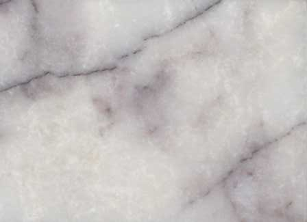
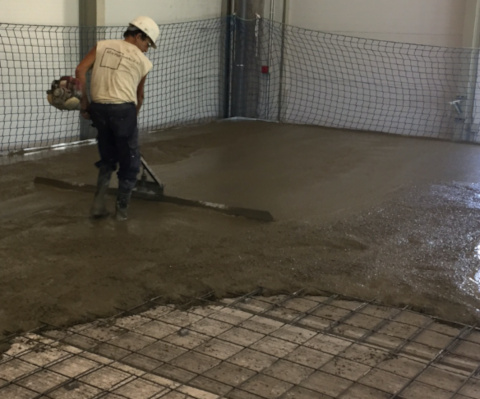
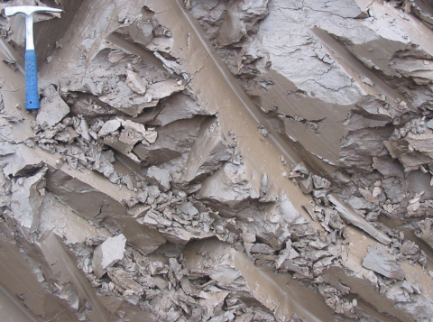
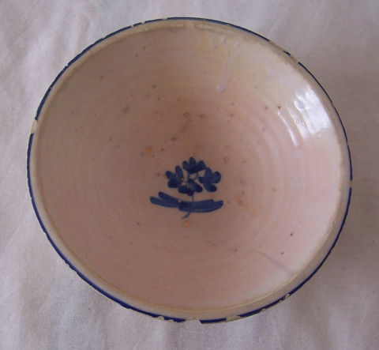

Los materiales pétreos¶
Son los materiales que provienen de las piedras o arenas de la naturaleza.
Índice de contenidos:
Propiedades de los pétreos¶
- Propiedades mecánicas de los pétreos
- Son materiales duros, relativamente frágiles, y con suficiente resistencia mecánica para resultar muy prácticos en la construcción de edificios y otras estructuras semejantes.
- Densidad
En general, es mayor que la del agua y varían desde los 1,5 kg/litro de la arena hasta los 2,8 kg/litro de la pizarra, mármol o granito.
La piedra pómez o la diatomita son excepciones con una densidad muy baja, menor que la del agua, al ser muy porosas.
- Respuesta a la luz
La mayoría de los materiales pétreos son opacos y tienen muy buena resistencia a la radiación del sol.
Algunos pétreos como el vidrio utilizado en las ventanas, el cuarzo o el zafiro utilizado en esferas de relojes son muy transparentes.
Otros pétreos como la porcelana son traslúcidos.
- Propiedades de fabricación de los pétreos
Los pétreos naturales no son maleables ni dúctiles ni se funden con facilidad. Se pueden cortar y pulir para producir láminas y bloques.
Los aglomerantes como el cemento son líquidos cuando se mezclan con agua y pueden moldearse con facilidad antes de que endurezcan.
Los materiales cerámicos tienen consistencia de pasta muy maleable aunque poco dúctil. Se pueden moldear con facilidad antes de cocer.
El vidrio se puede fundir con facilidad y actúa como un material plástico muy maleable y muy dúctil mientras está caliente. Puede formar hilos muy finos que sirven como refuerzo a otros materiales (fibra de vidrio).
- Conductividad de los pétreos
- Los materiales pétreos tienen muy poca conductividad térmica y eléctrica y resisten bien las altas tensiones y temperaturas. Por esa razón los vidrios y cerámicas se utilizan como separadores eléctricos en líneas de alta tensión y como material refractario en hornos.
- Propiedades químicas de los pétreos
Los pétreos son muy estables y resisten bien a los ácidos y cáusticos y a la oxidación y la radiación solar.
La excepción a esto son las rocas calizas y el mármol que se ven atacados por los ácidos y se deshacen poco a poco con la lluvia ácida generada por la contaminación.
- Propiedades ecológicas de los pétreos
Los materiales pétreos suelen ser poco reciclables, excepto el vidrio que se puede reciclar muchas veces sin pérdida de calidad.
No son tóxicos en la naturaleza, aunque la fabricación del cemento produce muchos gases de efecto invernadero. Se calcula que el 8% de todas las emisiones de CO2 provienen de su fabricación.
El asbesto, también llamado amianto, es altamente cancerígeno por lo que su uso y fabricación se ha prohibido hace años en los países occidentales.
El granito produce un gas radiactivo y cancerígeno llamado radón. Las zonas habitadas que contienen mucho granito en los alrededores deben tener esto en cuenta en las construcciones y usar buenos sistemas de ventilación.
Pétreos naturales¶
- Mármol
Se ha usado desde la antigüedad para construir edificios o tallar esculturas. En la actualidad todavía se usa en la construcción para cubrir suelos o paredes de aspecto lujoso.
El mármol está compuesto de caliza cristalizada por lo que no es resistente a los ácidos, que le deshacen.
Lysippos, CC BY-SA 2.0 DE, via Wikimedia Commons.¶
- Granito
Se ha utilizado desde la prehistoria para la construcción y es muy apreciado por su gran resistencia a la erosión y a la corrosión.
Se ha usado ampliamente como recubrimiento en edificios públicos y monumentos. También se usa en objetos cotidianos como encimeras de cocina.
Al incrementarse la lluvia ácida, el granito está sustituyendo al mármol en construcciones a la intemperie.

Rojinegro81, CC BY-SA 3.0, via Wikimedia Commons.¶
- Pizarra
Está formada por lajas u hojas planas y finas que la hace adecuada para fabricar paneles planos usados para cubrir tejados y, antiguamente, para escribir con tiza.

Dontworry, CC BY-SA 3.0, via Wikimedia Commons.¶
- Piedra caliza
Se utiliza desde la antigüedad como elemento de construcción. La catedral de Burgos está construida con piedra caliza.
Al quemarla en un horno produce cal, un componente fundamental del cemento gris.
La lluvia ácida la disuelve.

Gran Pirámide de Guiza. Recubierta por completo de piedra caliza.¶
Berthold Werner, CC BY-SA 3.0, via Wikimedia Commons.- Piedra arenisca
Es la roca sedimentaria más común. Está compuesta de granos de cuarzo y otras partículas unidas por un cemento natural (carbonato de calcio u otros).
Se emplea como material de construcción y en piedras de afilar.

Sarranpa, CC BY-SA 4.0, via Wikimedia Commons.¶
- Grava y arenas
- Son rocas de un tamaño pequeño. Se utilizan junto al cemento para formar hormigón.
Pétreos aglomerantes¶
Son materiales técnicos producidos industrialmente. Se presentan en forma de polvo que, mezclado con el agua, produce una pasta que se puede moldear. Poco tiempo después de su mezcla con el agua, endurecen y adoptan una consistencia pétrea.
- Yeso
Es un aglomerante de color blanco.
Se utiliza desde la prehistoria para unir y sellar piedras de construcciones. También se utiliza para revestimiento y decoración de paredes y techos.
El yeso de grano más fino se denomina escayola.
- Cemento
Está formado por piedra caliza y arcillas calcinadas en un horno a las que se añade yeso para mejorar sus propiedades. Generalmente es de color gris.
Se calcula que la producción anual es de más de 4000 millones de toneladas. Su uso principal es la producción de hormigón.
- Hormigón
Está formado por cemento mezclado con arena y grava.
El hormigón armado tiene una estructura interna de barras de acero para mejorar su resistencia.
Se utiliza para hacer pilares y suelos en los edificios, carreteras, puentes, presas, puertos, etc.
Dafran, CC BY-SA 4.0, via Wikimedia Commons.¶


Pétreos cerámicos¶
Están compuestos de un polvo fino mezclado con agua, con apariencia pastosa. Una vez modelado se hornea para unir entre sí las finas partículas por fusión.
- Arcilla
Es una roca sedimentaria formada por granos muy finos, menores de 0,004mm.
Fue la primera cerámica elaborada por los seres humanos y aún hoy es uno de los materiales más baratos y de más amplio uso.
Se utiliza para fabricar ladrillos, tejas, recipientes y para producir cemento.
Siim Sepp, CC BY-SA 3.0, via Wikimedia Commons.¶
- Loza
Se fabrica con arcilla mezclada con arena. Es un material poroso igual que la arcilla, por lo que se suele recubrir con un barniz externo, el vidriado, que cristaliza en la cocción haciendo la pieza impermeable.
Se utiliza para hacer vajillas.
Lourdes Cardenal, CC BY-SA 3.0, via Wikimedia Commons.¶
- Gres
Es una mezcla de arcilla con materiales como el sílice que aportan una mayor resistencia mecánica y a la cocción (desgrasantes).
Es un material muy duro e impermeable. Se utiliza sobre todo en la fabricación de baldosas para suelos.
- Porcelana
Es un material cerámico generalmente blanco, duro, impermeable, translúcido, muy resistente a la corrosión, al choque térmico y mal conductor de la electricidad.
Formado por polvo de caolín, cuarzo y feldespato es el material cerámico más fino y parecido al vidrio.
Se utiliza para hacer vajillas, jarrones, aisladores eléctricos, inodoros, lavabos, etc.

Vidrio¶
Es un material que se obtiene fundiendo arena de sílice, piedra caliza y carbonato de sodio.
Se utiliza para hacer vajillas, botellas, cerramientos de ventanas, parabrisas, espejos, lentes, material de laboratorio, etc.
Con fibras de vidrio se pueden reforzar otros materiales (planchas de escayola, resinas plásticas, etc.) para que adquieran mayor resistencia mecánica.
Cuestionarios¶
Cuestionarios de tipo test sobre los materiales pétreos.